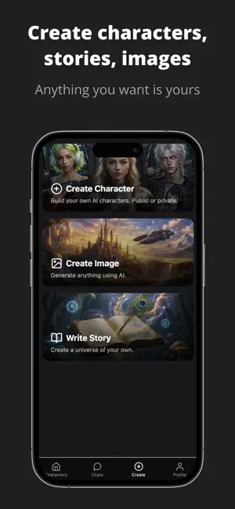
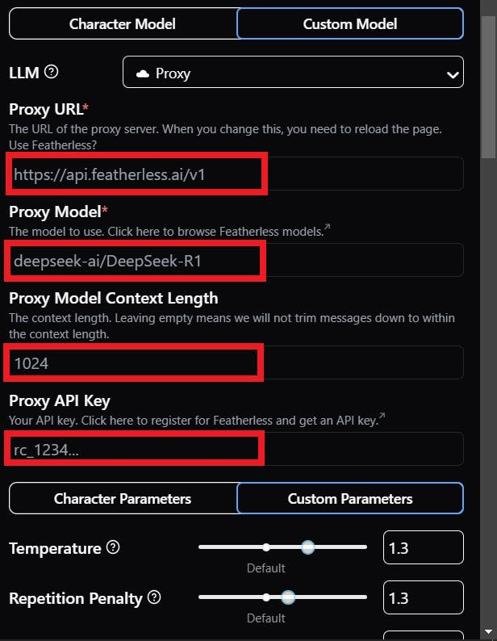

HammerAI 实战指南：从零把本地 AI 角色聊天跑起来
手把手带你完成 HammerAI 从安装到上手的完整流程，包括硬件对号、模型选择、角色库浏览与 Proxy 外接模型配置，避开新手最容易翻车的几个坑。
读完这篇教程，你就能在自己的机器上跑起 HammerAI——打开应用、挑一个喜欢的角色、用本地模型或外接 API 跟它聊起来，全程不花一分钱订阅费。
准备：先摸清自己的家底
HammerAI官网 是一个跨平台的 AI 角色聊天应用，桌面端支持 Windows、macOS 和 Linux，移动端有 Android 和 iOS 包。它的核心优势是同时支持内置云端模型和本地离线推理，以及 Proxy 模式外接任意 OpenAI 兼容的 API。这意味着你可以先零门槛用云端体验，再根据自己的硬件条件切换本地。
硬件门槛是新手最容易踩的第一道坎，提前算清楚能省很多折腾。
本地推理的硬性规则只有一条：模型必须完整装进内存或显存才能运行，看的是"空闲量"而不是总量。简单对号：7B 参数量的模型 Q4 量化版大约占 6~10GB，Q8 版翻一倍到 10~18GB。RTX 3060 12GB 能轻松跑 7B_Q8，RTX 4090 则能上到 13B 甚至 30B。没有独显也能玩，纯 CPU / 核显机器靠内存硬扛，7B_Q4 需要至少 8GB 空闲内存，速度会慢不少但能跑。
如果显存紧张到连 3B_Q4 都装不下，别急着退——Proxy 模式能救你一命：把模型生成外包给外部服务，你本机只负责界面和对话逻辑，对硬件几乎没要求。这个放到后面进阶章节细说。
第一步：安装并启动应用
桌面端的安装包从下载就能拿到，移动端各平台也有对应分发。装好后第一次启动会引导你完成几个基础设置：界面语言（支持十多种，包括简体中文）、主题色、还有模型来源的默认选择。
这里注意一个容易跳过的选项：模型来源。默认是"云端模型"——这是给完全不想折腾本地推理的用户准备的，应用内置了几款云端模型可以直接用，但有免费额度限制。如果你打算长期用、或者想完全离线，把它切到"本地模型"。
别急着点"下一步"，先把设置页里的"存储路径"看一眼——模型文件会下到这里，默认位置可能在系统盘，显存吃紧时模型体积动辄十几 G，改到 D 盘或专门的资料盘更稳妥。
第二步：逛角色库，挑第一个聊天对象
HammerAI 的角色库是社区驱动的，成千上万个创作者上传的角色按题材、性别、种族、身份等维度分类，免登录就能开聊。启动应用直接就是角色列表页，点任意一个角色的头像卡就能进聊天界面。
挑角色时别光看封面图，先往下滑找到 Creator's Note——这是角色作者写给玩家的使用说明，里面会交代视角（Male POV 还是 Female POV）、剧情前提、可能的注意事项。这部分信息比标签组合还重要：同样一个"医生"角色，有的设定是温柔治疗向，有的是悬疑惊悚向，Creator's Note 会直接告诉你这场戏的基调。
逛着逛着难免会刷到不感兴趣的角色，标签过滤和屏蔽功能能帮你把不喜欢的内容挡在门外。设置页里有个"按标签隐藏"的选项，填上你想完全屏蔽的标签（比如某种特定题材或视角），之后浏览角色库时这些角色直接不可见，比手动划走省心得多。

第三步：配置模型——三种路线任你选
角色选好了，接下来决定让谁来生成回复。HammerAI 给了三条路线，按硬件条件和使用习惯挑：
路线 A：内置云端模型。最省心，零硬件门槛，打开就能用。缺点是有免费额度，聊多了要等刷新或者付费。适合刚上手体验阶段。
路线 B：本地模型推理。最自由，完全离线，想聊多久聊多久。代价是硬件门槛——按之前显存对号表对号入座，从小模型开跑逐级加大，卡了就退。下载模型时应用内置了模型库，点几下就能拉下来，自动量化到你的硬件能扛的级别。
路线 C：Proxy 外接模型。这是最灵活的一条，相当于把语言生成整段转交给外部服务。打开任意角色聊天 → 右栏 Settings 标签 → LLM 下拉拉到最底选 Proxy，然后填四个字段：Proxy URL（服务端点）、Proxy Model（精确模型名）、Proxy Context Length（可选，上下文上限）、Proxy API Key（鉴权令牌）。本地 LM Studio 跑的模型、OpenRouter 这类聚合 API、Featherless 这类专用托管服务——理论上任何 OpenAI 兼容 API 都能接。

这里有个新手高频坑：Proxy URL 填错了端口号或者忘了带 /v1。本地 LM Studio 的端点默认是 http://localhost:1234/v1，漏写 /v1 直接 404。还有 Proxy Model 字段必须填服务方定义的精确模型名，比如 mistral-7b-instruct，自己瞎编一个名字肯定跑不通。
改完 URL 后记得重载页面才生效，这也是很多人调完 Proxy 发现没变化的原因。
第四步：开聊——调整上下文长度
进了聊天界面，先别急着大段输入。设置里有个 Context Length（上下文长度）的参数，新手容易忽略但它直接影响聊天体验。
上下文长度决定了模型能"看到"多少历史消息——值越大，对话的前后连贯性越好，但吃的内存也越多。本地推理时，如果显存紧张，先保守设到 2048 或 4096，确认流畅再往上加。Proxy 模式下你用的是外部服务的额度，上下文长度可以设到服务方支持的上限，不用替本机硬件操心。上下文长度的上限怎么算、压缩历史消息有什么坑，去HammerAI文档翻参数调校那一节，讲得比我详细得多。
还有一个小技巧：聊天界面里有个"角色卡导入"按钮，如果你在别的地方看到喜欢的角色卡（JSON 或 PNG 格式），直接灌进来就能用，不用等作者上传到社区。
三个新手最容易翻车的卡点
卡点一：模型加载卡在 100% 不动。大概率是显存不够，模型文件虽然下完了但系统在硬塞进内存，HDD 上会特别慢。解法：先把 Context Length 降到最低，或者换 Q4 量化的小一级模型；如果用的是机械硬盘，换 SSD 效果立竿见影。
卡点二：Proxy 模式连接失败。按顺序核对四个字段：URL 端口和 /v1 后缀 → 模型名是否精确 → API Key 是否正确 → 本地服务（比如 LM Studio）是否真的在运行。90% 的连接失败都是这几项里某一个填错了。
卡点三：角色聊到一半"出戏"了。这是上下文不够导致的——模型忘了前面聊过什么。解法：手动"压缩历史消息"（把长对话浓缩成摘要保留关键信息），或者加大 Context Length 的值。
进阶一句话
跑通基础流程后，可以试试自己创建角色卡、导入社区的 PNG 角色图，或者在 Discord 的 Creator's Corner 跟其他创作者交流。这个独立开发者项目很多功能都是用户一票一票加出来的，你提的需求说不定下一个版本就能看到。至于本文里提到的那些参考资料，我同步备份在了三个常用仓库里方便随时查：GitHub、Gitee、GitCode，国内访问不方便的话走后两个就行。